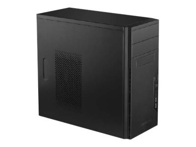

Boitier
Le boîtier joue un rôle important pour le look de votre rig, mais il a également un impact sur les performances. Si vous comptez configurer vos composants pour qu’ils fonctionnent à des vitesses supérieures à celles définies par les fabricants (overclocking), il est fort probable que les températures de votre système dépassent les valeurs moyennes. Dans ce cas, un débit d’air important et suffisamment de place pour des ventilateurs de boîtier vous permettront d’allonger la durée de vie de vos composants.
